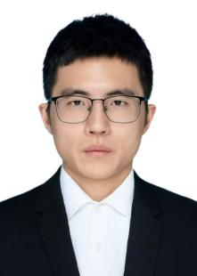

2022.08—至今
西南大学计算机与信息科学学院
副教授
Ye Yuan · Southwest University
西南大学 · 计算机与信息科学学院
副教授 · 工学博士 · 硕士生导师
新重庆青年创新人才，“新时代三千名流·缙云英才”优秀青年人才。

2022.08—至今
副教授
2013.07—2022.08
助理研究员
2017.09—2022.01
计算机学院 · 计算机应用技术
2010.09—2013.07
电子信息工程学院 · 电路与系统
2006.09—2010.07
电子信息工程学院 · 电子信息工程
2026
Ye Yuan（袁野）, Song Wang, Hongxun Zhou, Ling Wang, and Xin Luo*. A Novel Approach to Temporal QoS Estimation via Extended Kalman Filter-Incorporated Latent Feature Analysis, IEEE Transactions on Services Computing, 2026, 19(4): 2634-2645, CCF-A类期刊，中科院二区 [Link]
2026
Ye Yuan（袁野）, Haiyan Wang, Lun Hu and Xin Luo*. Patient-Visit-Spanned Hypergraph Learning for EHR-based Diagnosis Prediction, International Joint Conference on Artificial Intelligence (IJCAI), 2026, CCF-B类会议 [Link]
2026
Jinli Li, Ye Yuan*（袁野）, Tiantian He, and Xin Luo. Adaptive PID-Incorporated Nonnegative Latent Factor Analysis, IEEE Transactions on Systems Man Cybernetics: Systems, 2026, 56(7): 4384-4397, 中科院一区 [Link]
2026
Ling Wang, Ye Yuan（袁野） and Xin Luo*. Graph Tensor Convolutional Network, IEEE Transactions on Systems Man Cybernetics: Systems, 2026,56(5): 3008-3024, 中科院一区 [Link]
2026
Ling Wang, Ye Yuan（袁野） and Xin Luo*. Advanced High-Order Graph Convolutional Networks with Assorted Time-Frequency Transforms, IEEE/CAA Journal of Automatica Sinica（中国科技期刊卓越行动计划重点类期刊）, 2026, 13(2): 394-408. 中科院一区 [Link]
2025
Minglian Han, Ling Wang, Ye Yuan*（袁野）, Xin Luo. SGD-DyG: Self-Reliant Global Dependency Apprehending on Dynamic Graphs, ACM SIGKDD Conference on Knowledge Discovery and Data Mining (KDD), 2025, 802-813. CCF-A类会议 [Link]
2025
Jinli Li, Ye Yuan*（袁野）, and Xin Luo. Learning Error Refinement in Stochastic Gradient Descent-based Latent Factor Analysis via Diversified PID Controllers, IEEE Transactions on Emerging Topics in Computational Intelligence, 2025, 9(5): 3582-3597, 2025. 中科院二区 [Link]
2025
Jiufang Chen, Ye Yuan（袁野）, Xin Luo*, and Xinbo Gao*. An Adaptive Neighborhood-Resonated Graph Convolution Network for Undirected Weighted Graph Representation, IEEE Transactions on Neural Networks and Learning Systems, 2025, 36(11): 19939-19950. 中科院一区 [Link]
2025
Ye Yuan（袁野）,Ying Wang, and Xin Luo*, A Node-Collaboration-Informed Graph Convolutional Network for Highly Accurate Representation to Undirected Weighted Graph, IEEE Transactions on Neural Networks and Learning Systems, 2025, 36(6): 11507-11519. 中科院一区 [Link]
2025
Ye Yuan（袁野）, Siyang Lu*, and Xin Luo*. A Proportional Integral Controller-Enhanced Non-negative Latent Factor Analysis Model, IEEE/CAA Journal of Automatica Sinica（中国科技期刊卓越行动计划重点类期刊）, 2025, 12(6): 1246-1259. 中科院一区 [Link]
2025
Ling Wang, Kechen Liu, Ye Yuan*（袁野）. GT-A2T: Graph Tensor Alliance Attention Network, IEEE/CAA Journal of Automatica Sinica（中国科技期刊卓越行动计划重点类期刊）, 2025, 12(10): 2165-2167. 中科院一区 [Link]
2024
Ye Yuan（袁野）#, Jinli Li#, and Xin Luo*. A Fuzzy PID-Incorporated Stochastic Gradient Descent Algorithm for Fast and Accurate Latent Factor Analysis. IEEE Transactions on Fuzzy Systems, 2024, 32(7): 4049-4061. 中科院一区 [Link]
2024
Ye Yuan（袁野）, Xin Luo*, and MengChu Zhou. Adaptive Divergence-based Non-negative Latent Factor Analysis of High-Dimensional and Incomplete Matrices from Industrial Applications. IEEE Transactions on Emerging Topics in Computational Intelligence, 2024, 8(2): 1209-1222. 中科院二区 [Link]
2024
Jiufang Chen, Ye Yuan*（袁野）, and Xin Luo*, SDGNN: Symmetry-Preserving Dual-Stream Graph Neural Networks, IEEE/CAA Journal of Automatica Sinica（中国科技期刊卓越行动计划重点类期刊）, 2024, 11(7): 1717-1719. 中科院一区 [Link]
2024
Xin Luo*, Jiufang Chen, Ye Yuan（袁野）, and Zidong Wang. Pseudo Gradient-Adjusted Particle Swarm Optimization for Accurate Adaptive Latent Factor Analysis. IEEE Transactions on Systems Man Cybernetics: Systems, 2024, 54(4): 2213-2226. 中科院一区 [Link]
2024
Jinli Li, Xin Luo*, Ye Yuan（袁野）, and Shangce Gao. A Nonlinear PID-Incorporated Adaptive Stochastic Gradient Descent Algorithm for Latent Factor Analysis. IEEE Transactions on Automation Science and Engineering, 2024, 21(3): 3742-3756. 中科院二区 [Link]
2024
Jiufang Chen, Kechen Liu, Xin Luo*, Ye Yuan（袁野）, Khaled Sedraoui, Yusuf Al-Turki, and MengChu Zhou*. A State-migration Particle Swarm Optimizer for Adaptive Latent Factor Analysis of High-Dimensional and Incomplete Data, IEEE/CAA Journal of Automatica Sinica（中国科技期刊卓越行动计划重点类期刊）, 2024, 11(11): 2220-2235. 中科院一区 [Link]
2023
Ye Yuan（袁野）, Xin Luo*, Mingsheng Shang, and Zidong Wang. A Kalman-Filter-Incorporated Latent Factor Analysis Model for Temporally Dynamic Sparse Data, IEEE Transactions on Cybernetics, 2023, 53(9): 5788-5801. 中科院一区 [Link]
2023
Ye Yuan（袁野）, Renfang Wang*, Guangxiao Yuan, and Xin Luo. An Adaptive Divergence-based Non-negative Latent Factor Model. IEEE Transactions on System Man Cybernetics: Systems, 2023, 53(10): 6475-6487. 中科院一区 [Link]
2022
Ye Yuan#（袁野）, Qiang He#, Xin Luo#,*, and Mingsheng Shang*. A Multilayered-and-Randomized Latent Factor Model for High-Dimensional and Sparse Matrices, IEEE Transactions on Big Data, 2022, 8(3): 784-794. 中科院二区，ESI高引 [Link]
2022
Xin Luo, Ye Yuan（袁野）, Sili Chen, Nianyin Zeng, and Zidong Wang. Position-Transitional Particle Swarm Optimization-Incorporated Latent Factor Analysis, IEEE Transactions on Knowledge and Data Engineering, 2022, 34(8): 3958-3970. 中科院一区，ESI高引 [Link]
2022
Mingsheng Shang, Ye Yuan（袁野）, Xin Luo*, and Mengchu Zhou. An α-β-divergence-generalized Recommender for Highly-accurate Predictions of Missing User Preferences, IEEE Transactions on Cybernetics, 2022, 52(8): 8006-8018. 中科院一区 [Link]
2021
Xin Luo#, Ye Yuan#（袁野）, MengChu Zhou*, Zhigang Liu, and Mingsheng Shang*. Non-negative Latent Factor Model based on β-divergence for Recommender Systems. IEEE Transactions on System Man Cybernetics: Systems, 2021, 51(8): 4612-4623. 中科院一区 [Link]
2020
Ye Yuan（袁野）, Xin Luo*, Mingsheng Shang, and Di Wu. A Generalized and Fast-converging Non-negative Latent Factor Model for Predicting User Preferences in Recommender Systems. The Web Conference (WWW), 2020, 498-507. CCF-A类会议 [Link]
2020
Ye Yuan（袁野）, Mingsheng Shang, and Xin Luo*. Temporal Web Service QoS Prediction via Kalman Filter-Incorporated Dynamic Latent Factor Analysis. European Conference on Artificial Intelligence (ECAI), 2020, 561-568. CCF-B类会议 [Link]
2018
Ye Yuan（袁野）, Xin Luo*, and Mingsheng Shang. Effects of Preprocessing and Training Biases in Latent Factor Models for Recommender Systems. Neurocomputing, 2018, 275: 2019-2030. 中科院二区 [Link]
| 发明人 | 专利名称 | 公开或授权公告号 | 公开或授权公告日 | 分类 |
|---|---|---|---|---|
| 许明；罗辛；张能锋；袁野；吴迪；夏云霓 | 一种基于非负交替方向变换的用户特征抽取方法及抽取装置 | CN104636486B | 2018/1/2 | 已授权 |
| 袁野；罗辛；尚明生；吴迪 | 一种视频数据多维非负隐特征的提取装置和方法 | CN107704830B | 2020/12/8 | 已授权 |
| 袁野；李超华；罗辛；尚明生；吴迪 | 一种视频数据线性偏差主特征提取装置和方法 | CN107808163B | 2020/12/29 | 已授权 |
| 陈际秋；钟裕荣；吴昊；袁野 | 基于交替方向乘子法的蛋白质间相互作用预测装置和方法 | CN112037849B | 2021/6/8 | 已授权 |
| 陈际秋；钟裕荣；刘志刚；袁野 | 基于动量加速的缺失蛋白质间相互作用预测装置和方法 | CN112037850B | 2021/8/27 | 已授权 |
| 张能锋；袁野；罗辛；尚明生 | 一种基于多层随机隐特征模型的网页广告投放装置和方法 | CN112036963B | 2023/12/8 | 已授权 |
| 袁野；许明；罗辛；尚明生 | 一种Web服务吞吐量时变隐特征分析装置和方法 | CN112131080B | 2024/5/28 | 已授权 |
| 赵涛；贾云健；周继华；温万里；袁野 | 无线传感网络主特征提取方法、系统、装置及存储介质 | CN118861630B | 2025/4/1 | 已授权 |
| 周泓汛；袁野；刘勇言；吴昊 | 一种传染病趋势预测装置及其使用方法 | CN116975610B | 2025/11/25 | 已授权 |
| 赵博伟；罗辛；袁野 | 一种基于生物分子关联图自注意机制的药物重定位方法及系统 | CN121790029A | 2026/4/3 | 已公开 |
| 杨大堂；袁野；罗辛 | 基于自增强图神经网络的电网设备异常检测装置和方法 | CN120011965A | 2025/5/16 | 已公开 |
| 宗品亨；袁野；罗辛 | 基于树突图神经网络的汽车咨询服务用户分类方法及装置 | CN121167452A | 2025/12/19 | 已公开 |
| 袁野；陈泽桓；罗辛 | 一种基于联邦学习的汽车资讯推荐方法及其系统 | CN121167031A | 2025/12/19 | 已公开 |
| 李佳；袁野；高鹏程 | 基于时序数据预测的汽车咨询动态推荐方法及其装置 | CN121092780A | 2025/12/9 | 已公开 |
| 欧福焱；袁野；胡煜霖 | 一种用于汽车服务资讯知识图谱的图压缩方法及装置 | CN121188215A | 2025/12/23 | 已公开 |
Ye Yuan（袁野）, Xin Luo. Latent Factor Analysis for High-dimensional and Sparse Matrices: A particle swarm optimization-based approach, Springer, 978-981-19-6703-0, 2022
2025.11—2028.10
新重庆青年创新人才项目
60万元，主持
2025.06—2028.06
重庆市人工智能重大专项
项目总经费 1000 万元
本人负责经费 270 万元
主持（课题负责人）
2025.04—2028.03
国家重点研发计划项目
项目总经费 600 万元
本人负责经费 16 万元
主持（子课题负责人）
2024.01—2027.12
国家自然科学基金面上项目
50万，主持
2023.09—2024.11
企业委托横向
169.85万，主持
2023.01—2024.12
国家电网公司总部科技项目
项目总经费 407 万元
本人负责经费 40 万元
主持（课题2负责人）
2022.08—2025.07
重庆市自然科学基金面上项目
10万，主持
2021.01—2023.12
国家自然科学基金青年项目
24万，主持
2020.12—2021.12
GFKJ创新项目
80万，主持
2025年
2025年
基于环境全息感知协同的特高压线路生态弱扰建造关键技术及应用，蒋旭辉、郑励行、赵涛、向敏、胡琳彬、袁野、刘静、陈维超、李锦鹏、何家骏。中国电建集团重庆工程有限公司、西南大学、重庆邮电大学
2025年
高阶非标张量网络计算理论与方法，罗辛、李伟生、吴迪、尚明生、袁野。西南大学、重庆邮电大学、中国科学院重庆绿色智能技术研究院
2025年
实际驾驶场景下跨工况的车载动力电池包健康状况评估技术
电池包健康监测小团队，陈敏治、袁野、杨鑫、李海鹏、陈超、王子铭、王淞
2024年
2024年
2020年
猪八戒网众创平台智能服务关键技术及应用，王旭、朱明跃、夏云霓、龙梅、高旻、谭光柱、赵泉午、史晓雨、吴映波、谢洪、袁野、刘柳、王孝宏、唐铃、赵高红。猪八戒股份有限公司、重庆大学、中国科学院重庆绿色智能技术研究院
2018年
智慧金融中的集成生物识别关键技术及应用，周曦、王国胤、罗辛、李伟生、尚明生、肖斌、夏云霓、姚志强、周吉祥、周丽芳、袁野、吴全旺、周翔、胡峰、温浩。重庆中科云丛科技有限公司、重庆邮电大学、中国科学院重庆绿色智能技术研究院、重庆大学、广州云从信息科技有限公司
2026年
重庆市研究生教育教学改革研究项目
经费 1.5 万元
负责人 袁野 · 西南大学
2025.07—2027.07
重庆市高等教育教学改革研究项目（数字化转型专项）
3万元，主持
教学获奖信息待补充。
2026年11月
袁野、吴迪、吴昊、罗辛
计算机应用文摘 · 第42卷第21期
2026年10月
吴迪、袁野、吴昊、罗辛
计算机应用文摘 · 第42卷第20期
2025年5月
李娅、袁野、邹佺、胡莎
计算机科学 · 第52卷第5A期
| 年级 | 姓名 | 学位 | 工作单位 |
|---|---|---|---|
| 2022级 | 周泓汛 | 硕士 | 工商银行 |
| 2023级 | 王海艳 | 硕士 | 惠科股份 |
| 2023级 | 韩明廉 | 硕士 | 联想 |
| 2023级 | 魏小凡 | 硕士 | 国家电网 |
| 2023级 | 李佳 | 硕士 | 主导科技 |
| 2023级 | 王佐 | 硕士 | 重庆银行 |
| 2023级 | 韦倜乔 | 硕士 | 字节跳动 |
| 2023级 | 高鹏程 | 硕士 | 海康威视 |
| 2023级 | 陈泽恒 | 硕士 | 赛力斯 |
| 2024级 | 朱金凤 | 硕士 | XXX |
| 2024级 | 胡煜霖 | 硕士 | XXX |
| 2024级 | 宗品亨 | 硕士 | XXX |
| 2024级 | 吴俊鹏 | 硕士 | XXX |
| 2024级 | 闫庭旭 | 硕士 | XXX |
| 2024级 | 欧福焱 | 硕士 | XXX |
| 2025级 | 杨鑫 | 硕士 | XXX |
| 2025级 | 李海鹏 | 硕士 | XXX |
| 2025级 | 王子铭 | 硕士 | XXX |
| 2025级 | 王淞 | 硕士 | XXX |
| 2025级 | 陈超 | 硕士 | XXX |
| 2025级 | 黄健 | 硕士 | XXX |
| 2025级 | 魏豪辰 | 硕士 | XXX |
| 年份 | 获奖名称 | 获奖等级 | 获奖人 |
|---|---|---|---|
| 2026 | 西南大学优秀毕业研究生 | 校级 | 韩明廉 |
| 2026 | 西南大学优秀学位论文 | 校级 | 韩明廉 |
| 2025 | 第十九届“挑战杯”全国大学生课外学术科技作品竞赛“人工智能+”专项赛应用赛 | 二等奖 | 邱睿、王君洲、葛东轩、刘胤梁、向可、李勋、王宇航、许熙月、黄潇、骆渊文 |
| 2025 | 第四届中国研究生金融科技创新大赛 | 三等奖 | 魏豪辰、王淞、黄健 |
| 2025 | “华为杯”第二十二届中国研究生数学建模竞赛 | 二等奖 | 胡煜霖 |
| 2025 | “华为杯”第二十二届中国研究生数学建模竞赛 | 三等奖 | 朱金凤、高思聪、兰艺 |
| 2025 | 西南大学第九届“含弘杯”学生课外学术科技作品竞赛 | 二等奖 | 龙诗雨、任嘉欣、么伊琳、王琳、胡韵晗、郭锦钰、龙腾、涂佳均 |
| 2024 | 中国自动化大会（CAC 2024） | 最佳论文奖 | 王海艳、袁野 |
| 2024 | “华为杯”第二十一届中国研究生数学建模竞赛 | 三等奖 | 韩明廉 |
| 2023 | “华为杯”第二十届中国研究生数学建模竞赛 | 一等奖 | 周泓汛 |
| 2023 | “华为杯”第二十届中国研究生数学建模竞赛 | 数模之星提名奖 | 钟帅、李诗慧、周泓汛 |
研究交流可通过 yuanyekl@swu.edu.cn 联系。